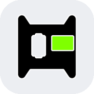

dingoConfig is not reachable
Join the same network as the dash: its own WiFi YY3588, or the hotspot or WiFi it is on.
If dingoConfig runs on this computer, start it first.

Join the same network as the dash: its own WiFi YY3588, or the hotspot or WiFi it is on.
If dingoConfig runs on this computer, start it first.